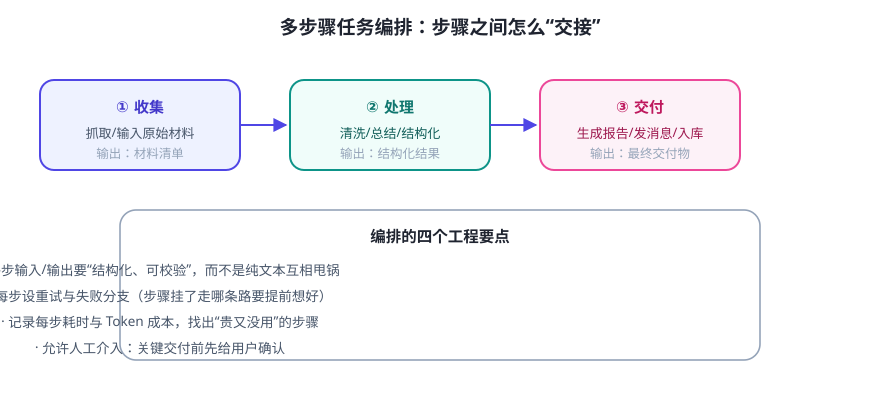

当 Agent 有 5 个工具、任务要串 6 步时，最大的风险不是“模型不够聪明”，而是步骤之间数据交接不清、某一步失败后没有出路。编排 = 提前把这些路设计好。
一个多步骤任务的例子
“每天收集行业新闻 → 按我的兴趣过滤 → 总结成简报 → 发到邮箱”：

四个工程要点
- 结构化交接：步骤输出用 JSON/明确字段（如
{"items":[...], "source":...}），下一步直接解析。纯文本交接是事故源头。 - 失败分支：每步想好“失败了怎么办”——重试 N 次？跳过？通知人工？还是整体中止？别让 Agent 现场瞎编。
- 可观测：记录每步的输入/输出/耗时/成本。排查“哪一步把数据搞坏了”全靠日志。
- 人工检查点：高风险步骤（发邮件、付款、删除）之前停下来让用户确认。
两种编排风格（按需选择）
| 代码编排（确定性强） | 模型编排（灵活性强） | |
|---|---|---|
| 谁决定下一步 | 你的代码按流程图走 | LLM 根据情况现场选 |
| 适合 | 流程固定、步骤明确 | 开放式、路线不固定 |
| 风险 | 死板、覆盖不全 | 乱走、难预测 |
| 实践 | 先写死流程，稳了再说 | 加步数/预算护栏 |
💡 实战建议：大部分项目用“代码定骨架 + 模型填内容”：固定的流程用代码写死（可靠），每个环节里需要理解/生成的地方才交给 LLM（灵活）。别让模型从头到尾自由发挥。
✍️ 今日练习（约 12 分钟）
- 画出你 Day 21 要做“信息收集助手”的流程图：标出每一步的输入/输出格式与失败分支。
- 给每个步骤想一句“验收标准”：怎么判断这一步做成功了？
- 挑出其中“必须人工确认”的步骤，说明原因。
📌 今日小结
编排的本质把“步骤怎么交接、失败怎么走”提前设计好
四要点结构化交接 · 失败分支 · 可观测 · 人工检查点
两风格代码编排（稳）vs 模型编排（活）；推荐“代码骨架 + 模型填空”
明天预告：一个 Agent 不够用时怎么办？入门多 Agent 协作——分工模式、适用场景与坑。